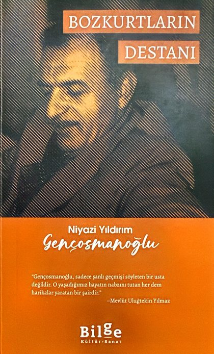
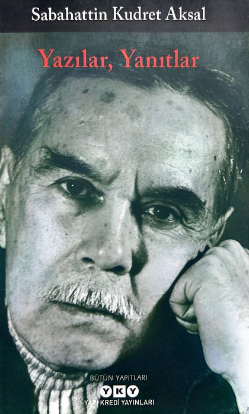
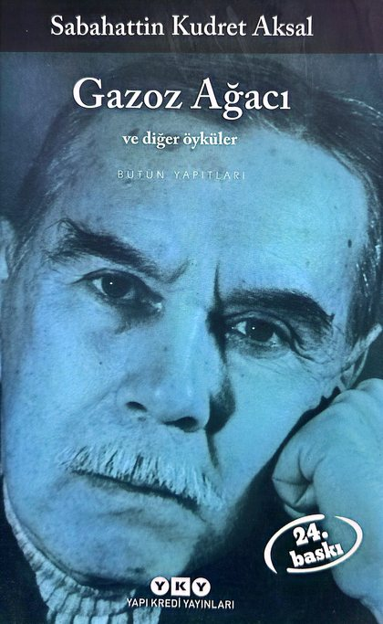
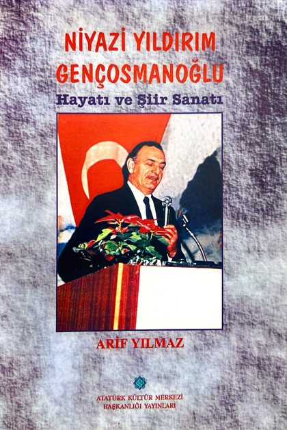

Tarjimai hol
Arif Yılmaz Uşak universiteti Gumanitar va ijtimoiy fanlar fakulteti Turk tili va adabiyoti kafedrasining yangi turk adabiyoti boʻlimida dars beradi. U 1992-yilda Yüzüncü Yıl universitetini tamomlagan. Gazi universitetida professor Sadık Kemal Tural rahbarligida Niyazi Yıldırım Gençosmanoğlu haqidagi magistrlik dissertatsiyasini (1996), Ankara universitetida professor Ramazan Kaplan rahbarligida Sabahattin Kudret Aksal haqidagi doktorlik dissertatsiyasini (2004) yozgan.
Celâl Bayar universitetida (1993–1999) va Ankara universitetida (1999–2005) ilmiy assistent boʻlib ishlagan. Shu yillarda bir muddat Viskonsin-Medison universitetining Yaqin Sharq tadqiqotlari dasturida boʻlgan (1996–1997). 2005-yilda Turkiya Milliy taʼlim vazirligi topshirigʻi bilan Halabga borib, Turkiya Respublikasining Halabdagi Bosh konsulligi qoshidagi Madaniyat markazini tashkil etish ishlariga direktor sifatida rahbarlik qilgan. 2005-yil sentabridan boshlab xuddi shu topshiriq bilan Halab universiteti Adabiyot fakultetida Turk tili va adabiyoti kafedrasini tashkil etishda ham qatnashgan (2005–2007). Gaziantep universitetida (2008–2012) Turk tili taʼlimi kafedrasini boshqargan va Turk tilini oʻqitish amaliy-tadqiqot markazining asoschi direktori boʻlgan.
2012-yildan beri Uşak universitetida ishlaydi. 2018-yilda dotsent unvonini olgan. Ijtimoiy fanlar instituti direktori oʻrinbosari, yangi turk adabiyoti boʻlimi mudiri hamda Turk tili va adabiyoti kafedrasi mudiri lavozimlarida ishlagan. 2024–2025-oʻquv yilining kuzgi semestrida Oʻzbekistonda, Samarqand davlat chet tillar institutida taklif etilgan oʻqituvchi sifatida dars bergan.
Uning tadqiqotlari Tanzimat davridan bugungi kungacha boʻlgan turk sheʼriyati, romani, hikoyasi va dramaturgiyasi hamda matnshunoslikka qaratilgan. Sabahattin Kudret Aksalning hikoya, sheʼr va nasriy asarlarini, Niyazi Yıldırım Gençosmanoğluning barcha sheʼrlarini hamda Halid Ziya Uşaklıgilning Bir Acı Hikâye asarini tanqidiy nashrga tayyorlagan. Aksal haqidagi ishlari uchun 2019-yilgi Sabahattin Kudret Aksal adabiy mukofoti doirasida hakamlar hayʼatining maxsus mukofotiga sazovor boʻlgan.
Tadqiqot sohalari
- Sheʼriyat
- Tanzimat va Servet-i Fünun sheʼriyati, Mehmet Âkif Ersoy, Orhan Veli va Garip oqimi, Sabahattin Kudret Aksal, Niyazi Yıldırım Gençosmanoğlu, Abdurrahim Karakoç va raqamli davr sheʼriyati
- Roman
- Peyami Safa, Kemal Tahir, Dinçer Sümer, fantastika va sehrli realizm, roman oʻquvchisi
- Hikoya
- Orhan Kemal, Kemal Bilbaşar, Füruzan, Cemil Kavukçu va 1980-yillardan keyingi turk hikoyachiligi
- Dramaturgiya
- Epik teatr, Recep Bilginer, Vasıf Öngörenning Asiye Nasıl Kurtulur? pyesasi
- Matnshunoslik
- Tanqidiy nashr, adabiy maktublar, Aksal va Gençosmanoğlu asarlari toʻplamlari
- Metodologiya
- Qadriyatlar semiotikasi, makon nazariyalari, psixoanalitik va ekotanqidiy oʻqish
- Qiyosiy tadqiqot
- Turk va oʻzbek adabiyotlarida sotsialistik realizm
Adiblar sahifalari
Uch adib haqida yillar davomida olib borilgan ishlar shu sahifalarda jamlandi. Nashrlar bilan birga ovoz va video yozuvlari, qoʻlyozmalar va fotosuratlar ham berildi.
- Mehmet Âkif Ersoy
- Âkif sheʼriyatida xalq tili va xalq madaniyati haqidagi maqolalar, Istiqlol marshiga bagʻishlangan maʼruza hamda shoir otasining qishlogʻi Šušicadan (Kosovo) fotosuratlar.
- Sabahattin Kudret Aksal
- Doktorlik dissertatsiyasi, monografiya, Yapı Kredi Yayınları nashriyotidagi tanqidiy nashrlar va maqolalar bilan birga Aksalning oʻz ovozida bir sheʼri va 2019-yilgi Sabahattin Kudret Aksal adabiy mukofoti.
- Niyazi Yıldırım Gençosmanoğlu
- Magistrlik dissertatsiyasi, monografiya, sheʼriy kitoblarining tanqidiy nashrlari va maqolalar bilan birga shoirning oʻz ovozida sheʼrlari va qoʻlyozmalari.
 2025Bir Acı Hikâye
2025Bir Acı Hikâye 2023Destanlar Burcu
2023Destanlar Burcu
2023Bozkurtların Destanı 2023Alperenler Destanı
2023Alperenler Destanı 2023Dede Korkut’tan Boğaç Han ve Salur Kazan
2023Dede Korkut’tan Boğaç Han ve Salur Kazan 2018Denemeler, Konuşmalar
2018Denemeler, Konuşmalar
2018Yazılar, Yanıtlar 2012Şeyh Vasfi ve Muallim Naci ile Mektupları
2012Şeyh Vasfi ve Muallim Naci ile Mektupları 2012Kemal Bilbaşar’ın Öykücülüğü
2012Kemal Bilbaşar’ın Öykücülüğü 2010Sabahattin Kudret Aksal: Hayatı, Sanatı ve Şiirleri
2010Sabahattin Kudret Aksal: Hayatı, Sanatı ve Şiirleri
2005Gazoz Ağacı ve Diğer Öyküler
2000Niyazi Yıldırım Gençosmanoğlu: Hayatı ve Şiir Sanatı
Nashrlar
Nashrlar eng yangisidan boshlab berilgan. Hammualliflikda yozilgan ishlarda mualliflar nashrdagi tartibda koʻrsatilgan. Bibliografik maʼlumotlar asl turkcha shaklida qoldirildi. Kitoblarning muqova, mundarija, kirish, xulosa va adabiyotlar sahifalarini, maqolalarning annotatsiyasi va toʻliq matnini hamda ayrim maʼruzalarning toʻliq matnini PDF shaklida yuklab olish mumkin.
Kitoblar 4
- 2012
Kemal Bilbaşar’ın Öykücülüğü. Türkçe Mevsimi, Uşak. Tanishish uchun sahifalar (PDF)
- 2012
Şeyh Vasfi ve Muallim Naci ile Mektupları. Türkçe Mevsimi, Uşak (2. basım 2013). Tanishish uchun sahifalar (PDF)
- 2010
Sabahattin Kudret Aksal: Hayatı, Sanatı ve Şiirleri Üzerinde Bir Araştırma. Millî Eğitim Bakanlığı Yayınları. Tanishish uchun sahifalar (PDF)
- 2000
Niyazi Yıldırım Gençosmanoğlu: Hayatı ve Şiir Sanatı. Atatürk Kültür Merkezi Başkanlığı Yayınları. Tanishish uchun sahifalar (PDF)
Tanqidiy nashrlar va nashrga tayyorlangan asarlar 12
- 2025
Halid Ziya Uşaklıgil, Bir Acı Hikâye. Eleştirel basım. Telve. Tanishish uchun sahifalar (PDF)
- 2023
Niyazi Yıldırım Gençosmanoğlu, Destanlar Burcu (genişletilmiş), Bozkurtların Destanı, Alperenler Destanı ve Dede Korkut’tan Boğaç Han ve Salur Kazan Destanları. Yeniden düzenlenmiş eleştirel basım, dört kitap. Bilge Kültür Sanat. Tanishish uchun sahifalar (PDF): Destanlar Burcu, Bozkurtların Destanı, Alperenler Destanı, Dede Korkut’tan Boğaç Han ve Salur Kazan Destanları
- 2018
Sabahattin Kudret Aksal, Denemeler, Konuşmalar. Genişletilmiş eleştirel basım (2. basım). Yapı Kredi Yayınları. Tanishish uchun sahifalar (PDF)
- 2018
Sabahattin Kudret Aksal, Yazılar, Yanıtlar. Yapı Kredi Yayınları. Tanishish uchun sahifalar (PDF)
- 2008
Sabahattin Kudret Aksal, Bütün Şiirleri (Şiirler 1938–1993). Eleştirel basım. Yapı Kredi Yayınları. Tanishish uchun sahifalar (PDF)
- 2005
Sabahattin Kudret Aksal, Gazoz Ağacı ve Diğer Öyküler. Eleştirel basım. Yapı Kredi Yayınları. Tanishish uchun sahifalar (PDF)
- 2002
Niyazi Yıldırım Gençosmanoğlu, Bütün Şiirleri 1–3: Destanlar Burcu, Bozkurtların Destanı, Alperenler Destanı. Eleştirel basım. Türk Edebiyatı Vakfı Yayınları. Tanishish uchun sahifalar (PDF): Destanlar Burcu, Bozkurtların Destanı, Alperenler Destanı
Kitob boblari va ensiklopediya maqolalari 6
- 2026
“Recep Bilginer’in Tiyatroları ve Tiyatro Anlayışı.” Türk Tiyatrosu (Hece Özel Sayı 52), C. 1, ed. Koray Üstün ve Nurtaç Ergün Atbaşı, s. 909–924. Hece.
- 2025
Arif Yılmaz ve Berkay Şen. “Henri Lefebvre’nin Mekânsal Üçlü Kuramı Bağlamında Asiye Nasıl Kurtulur? Oyunu.” Prof. Dr. Abide Doğan Armağanı, s. 479–496. Paradigma Akademi.
- 2023
“Kemal Bilbaşar’ın Öykülerinde Göç Olgusu.” Türk Edebiyatında Ekonomik Kaynaklı Göç Konulu Eserler Üzerine İncelemeler, ed. Ayfer Yılmaz, s. 243–261. Sonçağ.
- 2023
“Sabahattin Kudret Aksal (1920–1993).” Atatürk Ansiklopedisi (madde). Atatürk Araştırma Merkezi.
- 2023
“Sezai Karakoç’ta Metafizik Mizaç.” Sezai Karakoç, ed. Fatma Atay. Diyanet İşleri Başkanlığı Yayınları.
- 2020
“Sabahattin Kudret Aksal ve Şiirleri Üzerine.” Sabahattin Kudret Aksal’a Armağan, ed. Adil İzci, s. 76–89. Ve Yayınevi.
Taqrizli jurnallardagi maqolalar 16
- 2026
Berkay Şen ve Arif Yılmaz. “Philippe Hamon’un İdeolojik Çözümleme Modeli ve Esir Şehrin Mahpusu Romanında Normatif Değer Üretimi.” Edebî Eleştiri Dergisi 10 (2): 667–681. doi:10.31465/eeder.1938714 Annotatsiya va toʻliq matn
- 2026
Arif Yılmaz ve Berkay Şen. “Konforun Estetiği ve Mücadelenin Etiği: Esir Şehrin İnsanlarında İki Zıt Değer Dizgesi Olarak Nermin ve Nedime.” YAZIT Kültür Bilimleri Dergisi 6 (1): 170–191. doi:10.59902/yazit.1896108 Annotatsiya va toʻliq matn
- 2025
Arif Yılmaz ve Büşra Ulusoy. “Fantastik ile Büyülü Gerçekçiliğin Sınırları Üzerine Kavramsal Bir İnceleme.” Uluslararası Dil, Edebiyat ve Kültür Araştırmaları Dergisi 8 (3): 1271–1285. doi:10.37999/udekad.1720020 Annotatsiya va toʻliq matn
- 2023
Arif Yılmaz ve Fatih Bayram. “Dinçer Sümer’in Romanlarında Cinsel Kimlik İnşasındaki Sorunlar ve Çözüm Önerileri.” RumeliDE Dil ve Edebiyat Araştırmaları Dergisi 37: 378–392. doi:10.29000/rumelide.1405747 Annotatsiya va toʻliq matn
- 2023
Bayram Bilir ve Arif Yılmaz. “Özbek Edebiyatında Toplumcu Gerçekçilik.” Uluslararası Türk Lehçe Araştırmaları Dergisi (TÜRKLAD) 7 (2): 249–260. doi:10.30563/turklad.1365957 Annotatsiya va toʻliq matn
- 2023
Arif Yılmaz ve Fatih Bayram. “Epik Tiyatroda Merak Duygusunun Kırılması.” RumeliDE Dil ve Edebiyat Araştırmaları Dergisi 35: 423–438. doi:10.29000/rumelide.1342128 Annotatsiya va toʻliq matn
- 2017
Arif Yılmaz ve Burcu Uşaklı Sandal. “Füruzan’ın Öykülerinde Oidipal Kadın Kahramanlar ve Anne-Kız Çatışmaları.” Turkish Studies 12 (15): 667–686. doi:10.7827/TurkishStudies.11625 Annotatsiya va toʻliq matn
- 2015
Arif Yılmaz ve Nergiz Gümüş Özdemir. “Hüseyin Sîret’in ‘Leyâl-i Girîzân’ Adlı Şiiri.” Uluslararası Sosyal ve Eğitim Bilimleri Dergisi 2 (4): 148–174. doi:10.20860/ijoses.51448 Annotatsiya va toʻliq matn
- 2012
“İsmail Safa’nın Şiir Anlayışı ve Ilımlılar.” Gaziantep Üniversitesi Sosyal Bilimler Dergisi 11 (1): 137–158. Annotatsiya va toʻliq matn
- 2012
“Mehmet Âkif Ersoy’un Şiirlerinde Halk Kültürü Ögeleri.” Mustafa Kemal Üniversitesi Sosyal Bilimler Enstitüsü Dergisi 9 (17): 163–194. Annotatsiya va toʻliq matn
- 2011
“Orhan Veli’de Kaçış.” Gaziantep Üniversitesi Sosyal Bilimler Dergisi 10 (1): 257–279. Annotatsiya va toʻliq matn
- 2010
“Sosyal ve Siyasî Değişmeler Açısından Peyami Safa’nın Mahşer Romanı.” Yeni Türk Edebiyatı Araştırmaları 3: 39–57. Annotatsiya va toʻliq matn
- 2009
“Mehmet Âkif Ersoy’un Şiirlerinde Halk Dilinin Kullanımı.” Mustafa Kemal Üniversitesi Sosyal Bilimler Enstitüsü Dergisi 6 (11): 189–210. Annotatsiya va toʻliq matn
- 2006
“Sabahattin Kudret Aksal’ın Şiirlerinde ‘Kaçış’ Teması.” Türk Dili 91 (653): 421–432. Annotatsiya va toʻliq matn
- 2005
“Sabahattin Kudret Aksal’ın Hikâyeleri.” Türk Dili 90 (645): 254–263. Annotatsiya va toʻliq matn
- 2002
“Atsız’ın Niyazi Yıldırım Gençosmanoğlu’na Gönderdiği Mektuplar.” Türk Yurdu 22 (184): 44–49. Annotatsiya va toʻliq matn
Ilmiy anjuman maʼruzalari 12
- 2025
Arif Yılmaz ve Aysel Akdağ Uygun. “Cemil Kavukçu’nun Öykülerinde Yalnızlık Tezahürleri: Ekoeleştirel Bir Okuma.” 13th International New York Academic Research Congress on Social, Humanities, Administrative and Educational Sciences, s. 448–460. Toʻliq matn (PDF)
- 2025
Arif Yılmaz ve Aysel Akdağ Uygun. “Cemil Kavukçu’nun Öykülerinde Tabiatın İyileştirici Gücü.” 7. Uluslararası Karadeniz Modern Bilimsel Araştırmalar Kongresi, s. 1–9.
- 2024
“Dijital Çağda Şiirin Metamorfozu: İbrahim Tenekeci’nin Instagram Paylaşımları Üzerine Bir İnceleme.” Globallashuv davrida filologiya fanlarini o‘qitishning dolzarb muammolari (Karşı, Özbekistan), s. 17–26.
- 2024
“Yakın Dönem Türk Romanlarında Yabancılaşmanın Dili: Sembol.” The Development History and Modern Significance of Intercultural Dialogue (Semerkant), s. 621–626.
- 2024
Arif Yılmaz ve Mustafa Çiçek. “Abdurrahim Karakoç’un Vur Emri Şiir Kitabında Yer Alan Halk Bilimi Öğeleri.” 12. Uluslararası Başkent Sosyal, Beşeri, İdari ve Eğitim Bilimleri Kongresi, s. 1086–1101. Toʻliq matn (PDF)
- 2023
Arif Yılmaz ve Bayram Bilir. “Türk Edebiyatında Toplumcu Gerçekçi Romanların Ortaya Çıkışı.” Tilshunoslik va lingvodidaktikaning istiqbolli yo‘nalishlari (Semerkant), s. 234–238.
- 2023
Bayram Bilir ve Arif Yılmaz. “İlköğretimde Toplumcu Gerçekçi Eserler Meselesi.” Global Issues of Primary Education Development: Problem, Research, s. 290–292.
- 2023
Bayram Bilir ve Arif Yılmaz. “Toplumcu Gerçekçi Özbek Romanlarında Rüşvet Kronotopu.” Global and National Values Along Great Silk Road: Language, Education and Culture, s. 100–102.
- 2023
Arif Yılmaz ve Mustafa Çiçek. “Abdurrahim Karakoç’un Şiirlerinde Halk Bilimi Öğeleri” (özet). 8th International Congress on Humanities and Social Sciences in a Changing World, s. 218–219.
- 2023
Arif Yılmaz ve Fatih Bayram. “Epik Tiyatroda Kullanılan Tekniklerin İşlevselliği.” 5th International “Artemis” Congress on Humanities and Social Sciences, s. 339–345. Toʻliq matn (PDF)
- 2023
Arif Yılmaz ve Fatih Bayram. “Epik Tiyatroda Ara Oyun Kullanımı” (özet). 5th International “Artemis” Congress on Humanities and Social Sciences, s. 322–323.
- 2016
Arif Yılmaz ve Aykut Çelik. “Mizah Kavramı Çerçevesinde Yeni Garipçi Şiire Bir Bakış.” 1. Uluslararası Sosyal Bilimler Sempozyumu, s. 3075–3091. Toʻliq matn (PDF)
Boshqa ishlar 9
- 2026
“Romanı Okuyan, Romanda Kaybolan: Cemil Meriç’te Roman Okuru Üzerine.” Türk Dili 894: 40–47. Toʻliq matn (PDF)
- 2024
“Niyazi Yıldırım Gençosmanoğlu Üzerine Bir Söyleşi.” İmbik: Kültür, Sanat ve Edebiyat Dergisi 4 (25): 20–24. Toʻliq matn (PDF)
- 2022
“Samiha Ayverdi’nin Hancı Adlı Eseri.” İLESAM İlim ve Edebiyat Dergisi 37: 5–12. Toʻliq matn (PDF)
- 2021
“Niyazi Yıldırım Gençosmanoğlu’nun Şiir Kitaplarının Yeniden Yayımlanması Üzerine.” İLESAM İlim ve Edebiyat Dergisi 7 (32): 35–41. Muallif matni (PDF)
- 2014
“Asrımızın Dede Korkut’u Niyazi Yıldırım Gençosmanoğlu.” Devlet 454: 86–94. Toʻliq matn (PDF)
- 2008
“Atatürk ve Türk Dili.” Mavi 15 (Güz 2008). Toʻliq matn (PDF)
- 2005
Kitap tanıtımı: Sadık Tural, Edebiyat Bilimine Katkılar I. Türk Dili 90 (644): 181–186. Toʻliq matn (PDF)
- 2004
“Toplumsal Gerçekçilik Bağlamında Orhan Kemal’in Hikâyeleri.” Hece Öykü 4: 86–91. Toʻliq matn (PDF)
- 2004
“Niyazi Yıldırım Gençosmanoğlu’nun Düz Yazıları.” Bizim Külliye 22: 45–51. Toʻliq matn (PDF)
Oʻquv fanlari
Uşak universitetida bakalavriat, magistratura va doktorantura bosqichlarida oʻqitgan asosiy fanlari.
- Bakalavriat
- Tanzimat adabiyoti (sheʼriyat) Tanzimat Edebiyatı (Şiir)
- Servet-i Fünun adabiyoti (sheʼriyat) Servet-i Fünun Edebiyatı (Şiir)
- Respublika davri turk adabiyoti Cumhuriyet Dönemi Türk Edebiyatı
- 1980-yillardan keyingi turk hikoyasi 1980 Sonrası Türk Hikâyesi
- Yangi turk adabiyotiga kirish I–II va Yangi turk adabiyoti I–IV (avvalgi oʻquv rejasi) Yeni Türk Edebiyatına Giriş I–II, Yeni Türk Edebiyatı I–IV
- Sheʼr sanʼati Şiir Sanatı
- Sheʼr tahlili Şiir Tahlilleri
- Adabiyot nazariyasi asoslari I–II Edebiyat Bilgi ve Teorileri I–II
- Jahon adabiyoti Dünya Edebiyatı
- Xorijiy talabalar uchun akademik turk tili: gapirish va tinglash (universitet boʻyicha tanlov fani) Uluslararası Öğrenciler İçin Akademik Türkçe Konuşma ve Dinleme
- Magistratura
- XIX asr yangi turk adabiyoti matnlari tahlili 19. Yüzyıl Yeni Türk Edebiyatı Metin Tahlilleri
- XIX asr turk adabiyotida hikoya va roman 19. Yüzyıl Türk Edebiyatında Hikâye ve Roman
- Respublika davri turk sheʼriyati tahlili Cumhuriyet Dönemi Türk Şiir Tahlilleri
- Adabiyot tarixi metodologiyasi Edebiyat Tarihi Metodolojisi
- Til va adabiyot estetikasi Dil ve Edebiyat Estetiği
- Ilmiy tadqiqot usullari Bilimsel Araştırma Yöntemleri
- Doktorantura
- Yangi turk sheʼriyati tadqiqotlari Yeni Türk Şiiri İncelemeleri
- Yangi turk adabiyotida sheʼr turining rivojlanishi Yeni Türk Edebiyatında Şiir Nevinin Gelişimi
- Yangi turk adabiyotida nasr turining rivojlanishi Yeni Türk Edebiyatında Nesir Nevinin Gelişimi
- Adabiyot nazariyasi Edebiyat Teorisi ve Kuramları
Ilmiy rahbarlik
Uning ilmiy rahbarligida yozilib, Uşak universitetining magistratura va doktorantura institutida himoya qilingan dissertatsiyalar.
- 2026
Büşra Ulusoy. Engin Geçtan’ın romanlarında büyülü gerçekçilik: Gerçekliğin sihirli kapıları. Yüksek lisans.
- 2025
Mustafa Çiçek. 1980 sonrası Türk şiirinde İslami duyarlılık. Doktora.
- 2025
Talip Karaoğlu. Türk romanında mültecilik ve mülteci (2000–2025). Yüksek lisans.
- 2024
Bayram Bilir. Türk ve Özbek edebiyatlarında toplumcu gerçekçi romanların kronotopları. Doktora.
- 2024
Fatih Bayram. Epik tiyatronun Türk edebiyatına yansıması ve eserlerin incelenmesi. Doktora.
- 2016
Burcu Uşaklı Sandal. Füruzan’ın öyküleri üzerine psikanalitik bir inceleme. Yüksek lisans.
Matbuotda va mukofotlar
2019-yilgi Sabahattin Kudret Aksal adabiy mukofotining hakamlar hayʼati maxsus mukofoti, esdalik lavhalari va sertifikatlar hamda Gaziantep, Uşak va Samarqanddagi faoliyat haqidagi matbuot xabarlari alohida sahifada jamlandi.
Havolalar
- Google Scholar Nashrlar va iqtiboslar
- ORCID 0000-0002-2652-3649
- AVESİS (Uşak universiteti) avesis.usak.edu.tr/arif.yilmaz
- DergiPark @ayilmaz_1038
- Web of Science ResearcherID ACV-6378-2022
- ResearchGate Arif-Yilmaz
- Academia.edu usak.academia.edu/ArifYılmaz
- Google Sites sahifasi sites.google.com/view/ayilmaz
Uşak universiteti, Gumanitar va ijtimoiy fanlar fakulteti, Turk tili va adabiyoti kafedrasi, Uşak, Turkiya.
Fotosuratlar